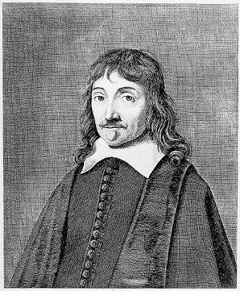
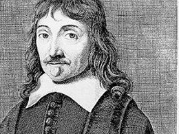

ბიოგრაფია
რენე დეკარტი იყო ფრანგი მათემატიკოსი, ფილოსოფოსი და მეცნიერი. იგი დაიბადა XVII საუკუნეში. დეკარტი ითვლება ახალი დროის მეცნიერების ერთ-ერთ მთავარ ფიგურად და ხშირად მოიხსენიებენ როგორც თანამედროვე ფილოსოფიის მამას.


მოღვაწეობა
დეკარტი მოღვაწეობდა მათემატიკის, ფილოსოფიისა და ბუნებისმეტყველების სფეროებში. მისი მიზანი იყო ცოდნის ისეთი სისტემა შეექმნა, რომელიც ლოგიკასა და გონებაზე იქნებოდა დაფუძნებული.
მიღწევები
დეკარტმა შექმნა კოორდინატთა სისტემა, რომლის მეშვეობითაც გეომეტრიული ფიგურები ალგებრული განტოლებებით აღიწერება. ამ აღმოჩენამ ერთმანეთთან დააკავშირა ალგებრა და გეომეტრია.
წვლილი
დეკარტის მიერ შემოღებულმა ანალიტიკურმა გეომეტრიამ საფუძველი ჩაუყარა თანამედროვე მათემატიკას. მისი იდეები გამოიყენება ფიზიკაში, ინჟინერიასა და კომპიუტერულ მეცნიერებებში.
ფაქტები
დეკარტი თვლიდა, რომ აზროვნება არის ადამიანის არსებობის მთავარი მტკიცებულება. მისი ცნობილი ფრაზა „ვაზროვნებ, მაშასადამე ვარსებობ“ ასახავს მის დამოკიდებულებას როგორც მეცნიერების, ისე ცხოვრების მიმართ.